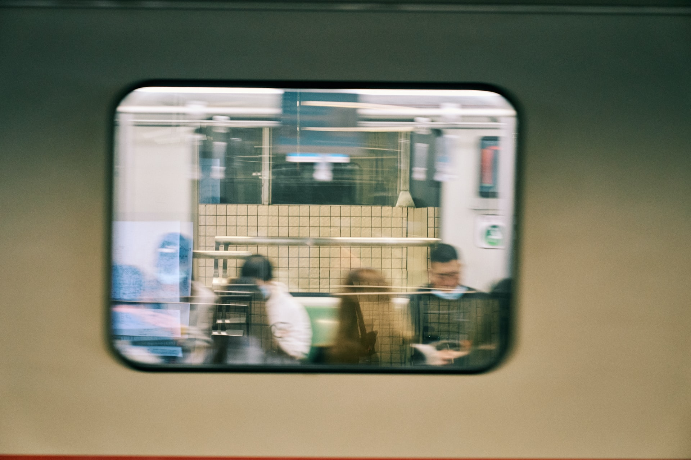
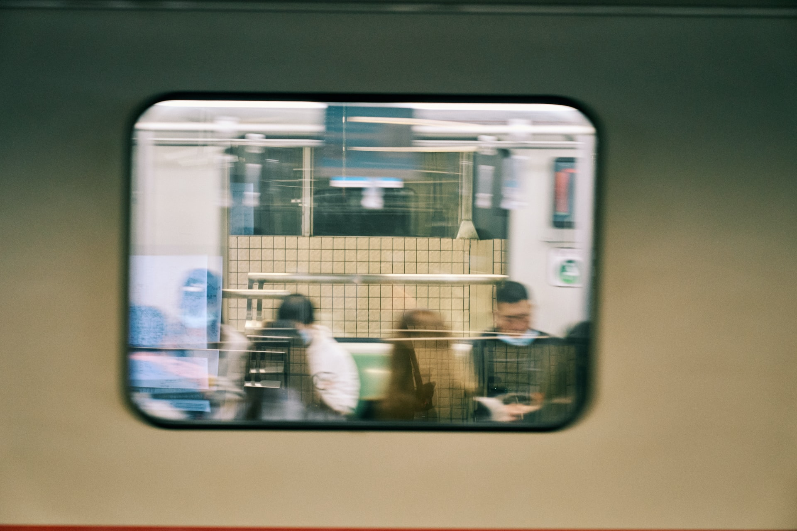

Shanghai is one of the 4 major cities in China and it's the largest and richest and one of the worlds most populated cities. This huge city is located on the east coast of China and is a financial hub and home to the worlds busiest container port. Shanghai has a futuristic skyline that overlooks colonial-style buildings. There are many areas of Shanghai to explore, and the city has a huge food scene from high-end to more budget-friendly eats. This Shanghai city guide covers all of the top sights and attractions to see, what neighbourhoods to explore in the city and what and where to eat, as well as some travel tips.

The best way to get round Shanghai is by metro and shared bicycles. Shanghai has one of the most robust metro systems in the world, and it is both affordable and convenient. However, some of the stations are built a little far away from the attractions. In such case, you will need to take a shared bicycle, just like everyone else in the city, to get from the metro station to the place you want to visit. For traveling across the city From Puxi to Pudong area, going from the old part to the modern district in Shanghai, take Line 1 or Line 2, the oldest and busiest metro lines in the city. If you are taking a tour in Shanghai, make sure to avoid rush hours. As a cashless city where all transactions nowadays take place in an app on your cellphone, Shanghai Metro enables passengers to pay by scanning QR code from their app.
Since shared bicycle programs have become popular and prevalent in every city in China in the mid 2010s, shared bicycles has turned into an indispensable part of Shanghainese people's daily commute. With the price of one Chinese Yuan (16 cents in USD) per use, it is one of the cheapest and most efficient ways to get round the city. You will see bicycle stations on every corner of Shanghai, from any neighborhood to metro stations. However, it is more than an additional mean to move faster after you get off the metro: urban cycling is a a new trend in Shanghai too. The fast-paced city pushes people to commute and exercise at the same time through riding bicycles to work, and you don't need to pay extra money for going to the gym. Using shared bicycles to see the city could be a great experience, as you can explore the attractions, streets, and cute stores at your own pace.
 
